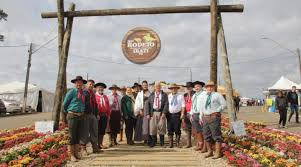
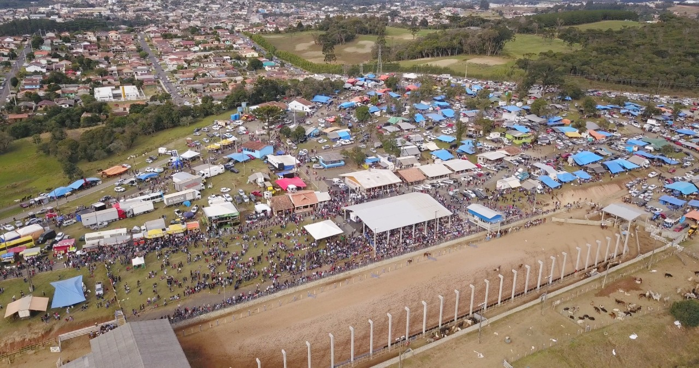

Eventos
Em Irati ocorrem diversos eventos, em destaque temos:
Festa do Pêssego

Durante a festa do pêssego, temos diversas atrações, ocorrendo no parque aquático de Irati, a festa reúne desde a exposições de automóveis á barracas de alimentos, trazendo grande diversão a todos.
Rodeio Iratiense
No rodeio iratiense, ocorrem diversos espetáculos, com os peões nas touradas e nas provas do laço, na festa além de trazer food trucks de todo o Paraná.
Expo Irati
Tendo uma grande escala, o evento traz consigo muitas variedades principalmente na área gastronômica, contendo também tendo diversas exposições do meio.